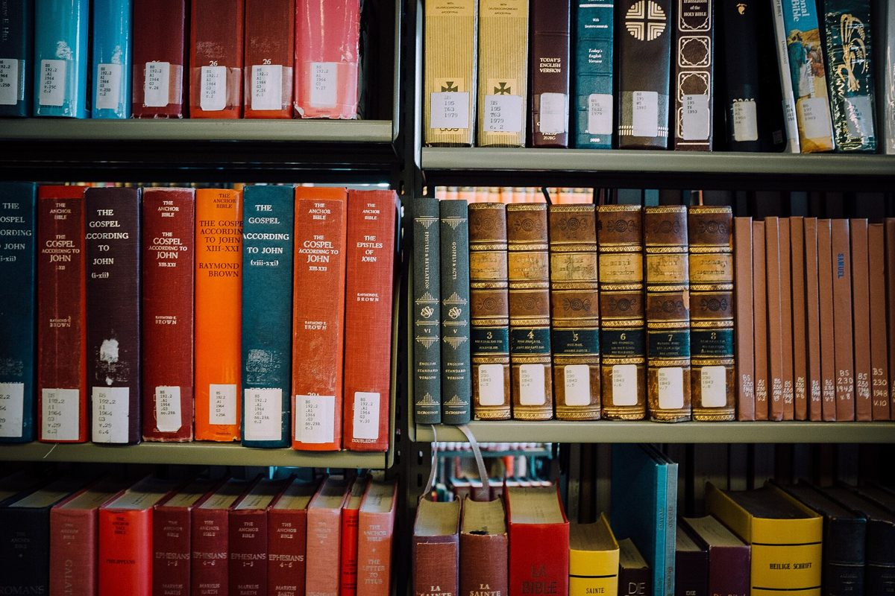
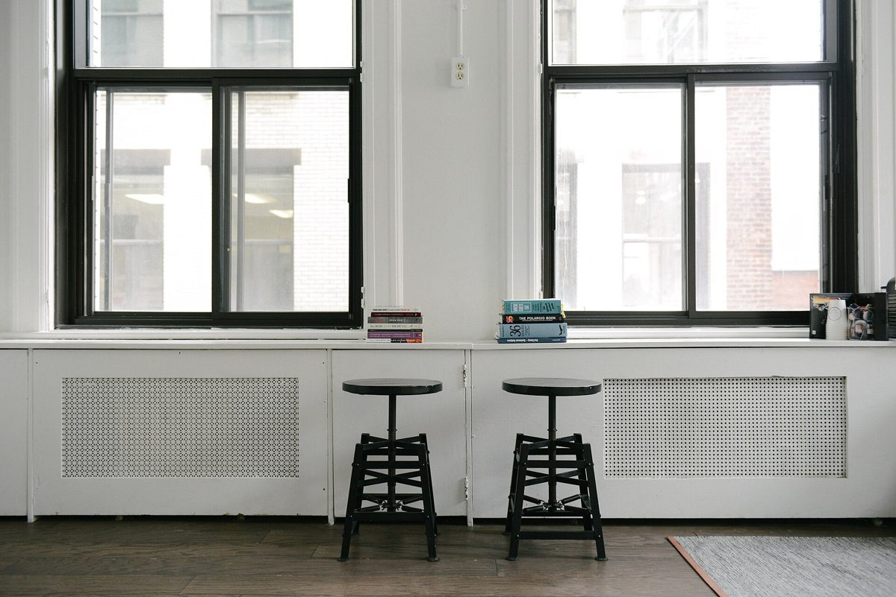
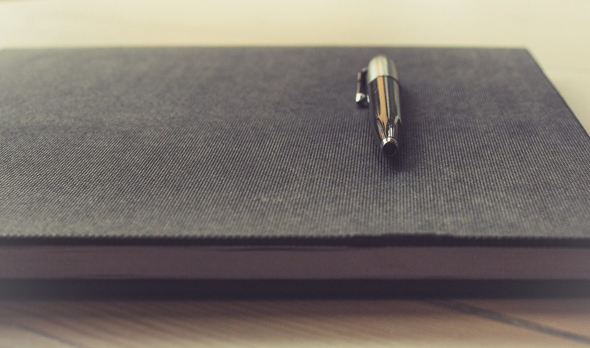
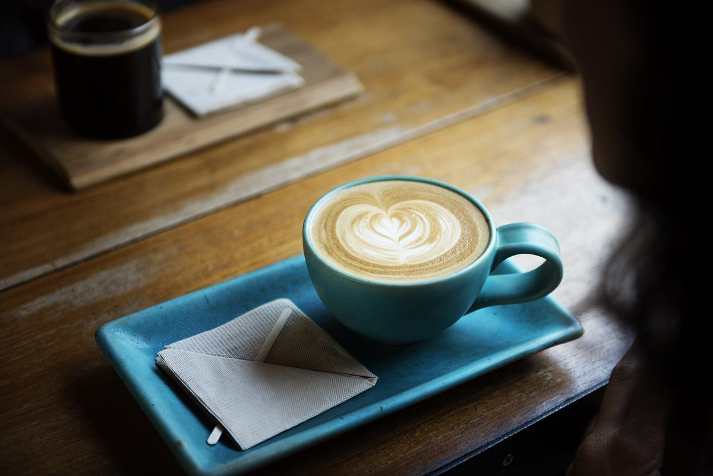
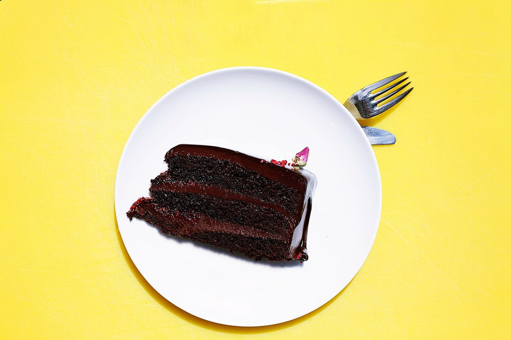
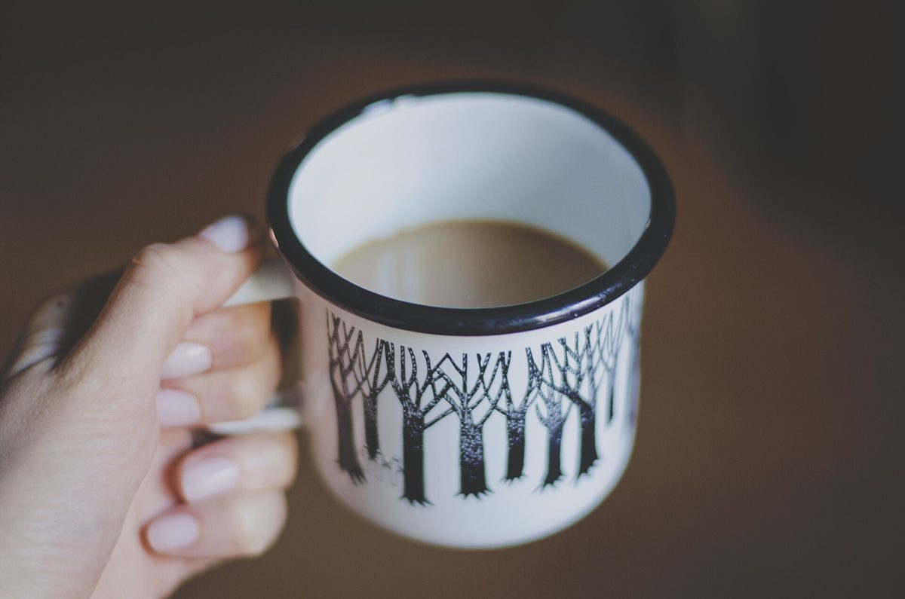

お店のこと
古民家で、本とお茶の時間を。
「くらしのら」は、鹿沼市西沢町にある古本喫茶です。古民家を改装した店内に、地域の方から集まった本が並びます。紹介記事によると、本はジャンルを決めずに集められ、本を通じて人がつながる場所とされています。
2022年4月、鹿沼市のパン屋「一本杉農園」の姉妹店として本オープン。おでん酒場「湯気」と同じ敷地にあり、パン屋&カフェ「蒔時」とも同じ系列です。別の記事では、この地域で大切にされてきた本と次の読み手をつなぐ「中継地点」とも紹介されています。
店名の意味は確認できていないため、ここでは触れません。上の記述は2022年ごろの紹介記事に基づくもので、現在の様子はInstagramでご確認ください。


畑のそばの姉妹店
姉妹店のパン屋「一本杉農園」は鹿沼のお店。くらしのらは、その広がりのなかで、ゆっくり本を読むための場所として開かれました。
写真は畑のイメージ(フリー素材)で、実際の風景ではありません。



メニュー
読書のおともに。
2022年の紹介記事などで名前が確認できたメニューです。現在の取り扱い・価格・営業時間は準備中(詳細はお店にご確認ください)。




写真はすべてフリー素材のイメージで、実際のメニューとは異なります。
口コミ(イメージ例)
こんな時間が過ごせそう。
以下は制作側が作成したイメージ例で、実在のお客様の声ではありません。
イメージ例
棚の本を一冊選んで、コーヒーを片手にゆっくり読む。時間が静かに過ぎていきそうです。
イメージ例
古民家の落ち着いた空気のなかで、甘いものとお茶をいただく午後。ふらりと立ち寄りたくなります。
イメージ例
手持ちの本を寄付したり、ほかの人の本に出会えたり。本をめぐる小さなつながりが楽しそうです。